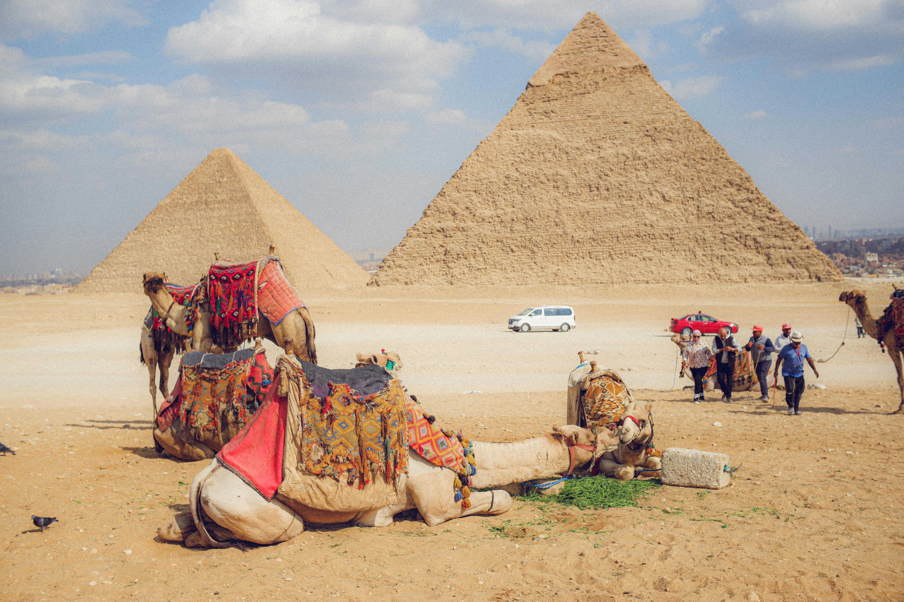
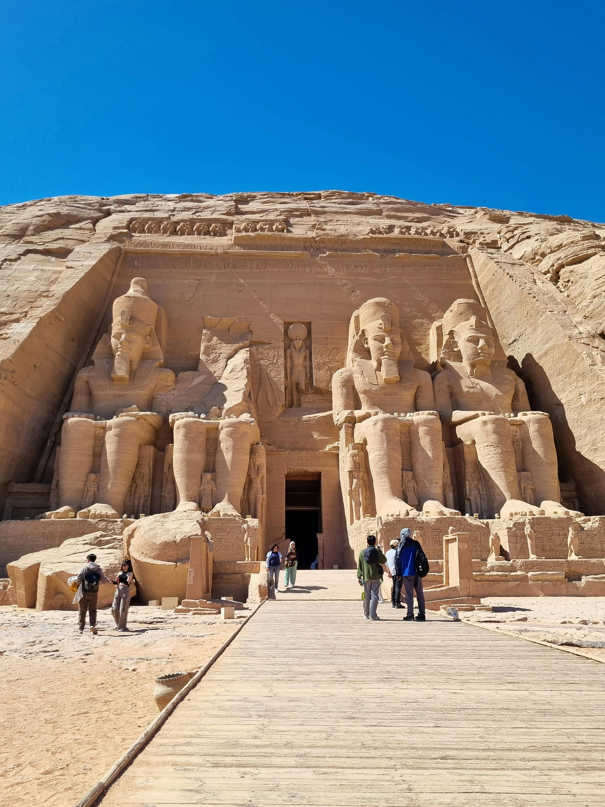
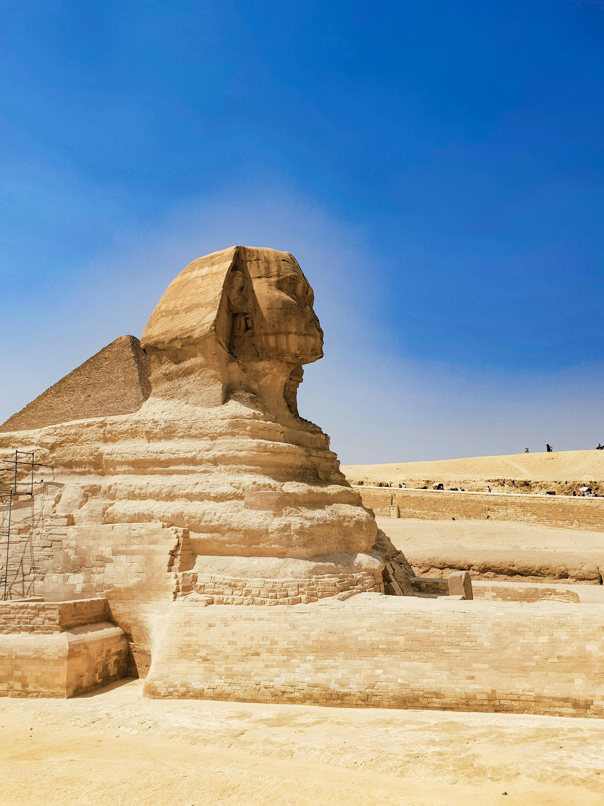

Les œuvres majeures de l'Égypte

Pyramides de Gizeh
Les pyramides de Gizeh sont parmi les monuments les plus célèbres du monde. Elles représentent la grandeur et le savoir-faire de l'Égypte ancienne.
Cartel
- Lieu : Gizeh
- Période : Égypte ancienne
- Type : monument funéraire

Temple de Karnak
Le temple de Karnak est un immense complexe religieux situé à Louxor. Il impressionne par ses colonnes monumentales et son importance historique.
Cartel
- Situé à Louxor
- Complexe religieux majeur
- Consacré au dieu Amon

Vallée des Rois
La Vallée des Rois est un site emblématique où de nombreux pharaons ont été enterrés. Elle est surtout connue pour la découverte de la tombe de Toutankhamon.
Cartel
- Lieu : Louxor
- Fonction : nécropole royale
- Élément célèbre : tombe de Toutankhamon